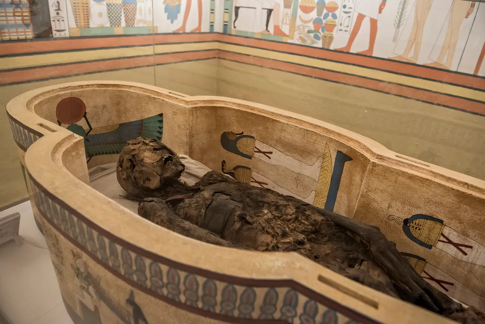

O Museu Egípcio Rosacruz
Localizado no bairro Bacacheri, em Curitiba, o Museu Egípcio Rosacruz é um dos espaços culturais mais fascinantes da cidade. O local abriga um rico acervo de réplicas fiéis de objetos do Antigo Egito, incluindo estátuas de deuses e faraós, sarcófagos, amuletos e papiros. O complexo se destaca não apenas pelas suas galerias internas, mas também por sua arquitetura temática encantadora e pelos jardins ao ar livre que transportam os visitantes diretamente para a antiguidade ao longo do passeio.

História do Museu
Inaugurado em outubro de 1990, o museu nasceu por iniciativa da Ordem Rosacruz (AMORC), uma organização internacional dedicada ao estudo das leis da natureza e do conhecimento humano. A instituição tem uma forte ligação histórica com as tradições do Antigo Egito, o que motivou a criação do espaço para preservar e difundir esse legado histórico e educacional no Brasil. Ao longo dos anos, o museu expandiu suas instalações para comportar um acervo cada vez maior e receber visitantes do mundo todo.

A Cultura no Museu
A proposta cultural do espaço vai além da simples exposição de artefatos antiquíssimos; trata-se de um centro vivo de aprendizado e reflexão. O museu promove a imersão na religiosidade, na arte, na organização social e na filosofia egípcia por meio de exposições itinerantes, palestras e atividades educativas. Ao integrar a sabedoria do passado com o pensamento rosacruz contemporâneo, a instituição incentiva o público a explorar a busca da humanidade pelo conhecimento e pela espiritualidade ao longo das eras.

Curiosidades
A Múmia Verdadeira Tekt-Iset
Embora a maior parte do acervo seja composta por réplicas cientificamente elaboradas, o museu abriga uma peça autêntica extraordinária: a múmia de Tekt-Iset, uma mulher egípcia que viveu há mais de 2.500 anos. O corpo mumificado e seus sarcófagos foram doados à Ordem Rosacruz e estão em exposição permanente em uma sala especial.
O Complexo do Museu a Céu Aberto
Além do edifício principal, a área externa abriga o "Museu a Céu Aberto", um percurso repleto de esculturas monumentais, obeliscos e uma reprodução da Esfinge. O caminho conta ainda com uma réplica da famosa Pedra de Roseta e o Museu Rei Tutankhamon, tornando a caminhada pelos jardins uma verdadeira jornada arqueológica.